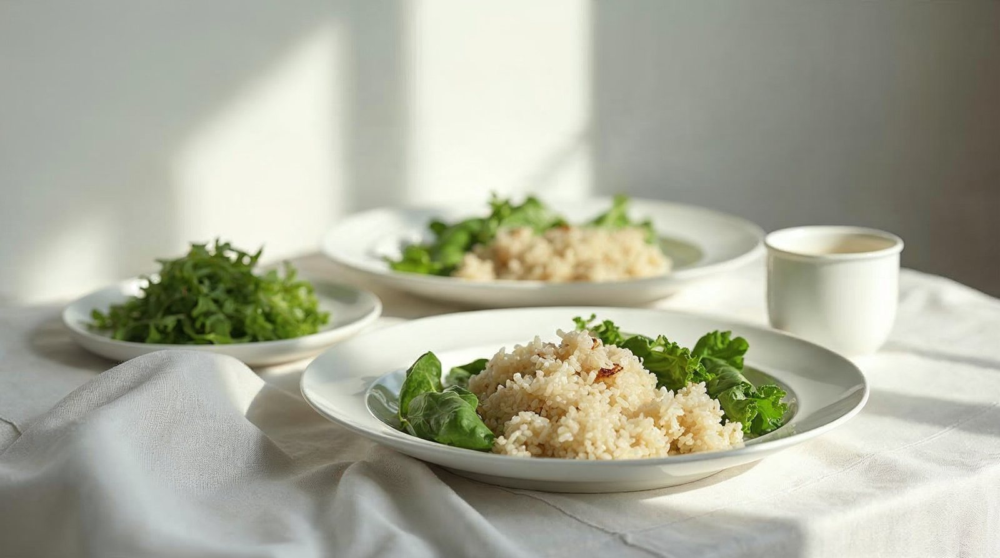
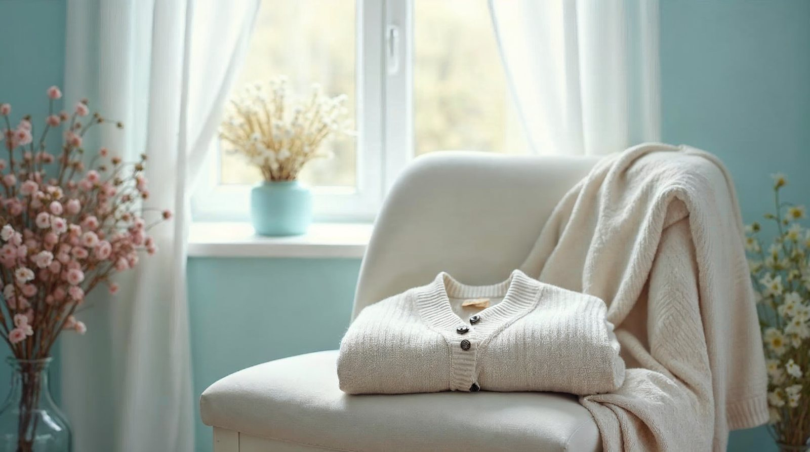
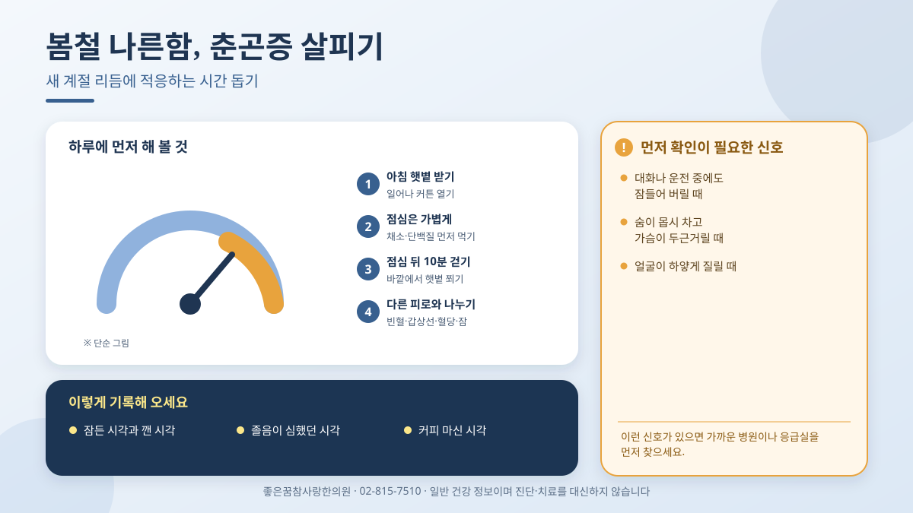

이종호 한의사 감수좋은꿈참사랑한의원 대표원장 (한의사 면허번호 19769)발행 2026-11-26 · 수정 2026-11-26
이 글의 차례
창밖으로 햇살이 길게 들어오는 오후, 점심을 먹고 자리에 앉았는데 눈꺼풀이 천근만근입니다. 모니터의 글자가 흐릿해지고, 고개가 자꾸 앞으로 떨어집니다. 커피를 한 잔 더 마셔 보지만 졸음은 쉽게 물러나지 않습니다. 밤에 분명 평소만큼 잤는데도 그렇습니다.
봄이 되면 진료실에서 "요즘 왜 이렇게 나른한지 모르겠어요"라는 말을 자주 듣습니다. 겨울 내내 잘 버텼는데 오히려 날이 풀리니 몸이 늘어진다고 하십니다. 입맛이 떨어지고, 의욕이 없고, 오후만 되면 아무것도 하기 싫어진다고 덧붙이시는 분도 많습니다.
이런 모습을 흔히 춘곤증이라고 부릅니다. 병명이라기보다 계절이 바뀌는 시기에 몸이 새 리듬에 적응하며 생기는 피로에 가깝습니다. 대개 몇 주 사이에 몸이 적응하면서 가라앉지만, 그동안 일과 공부, 운전에 지장을 줄 수 있어 가볍게만 넘길 일은 아닙니다.
그리고 봄철 피로라고 생각했던 것이 사실은 다른 이유에서 오는 경우도 있습니다. 그래서 저는 나른함을 말씀하시는 분께 잠과 식사, 움직임뿐 아니라 빈혈, 갑상선, 혈당, 기분의 흐름까지 함께 여쭙습니다.
춘곤증은 어떤 모습인가요
춘곤증의 가장 흔한 모습은 낮 졸음과 나른함입니다. 특히 점심 식사 뒤 오후 두세 시 무렵에 졸음이 몰려오고, 몸이 무거워 움직이기 싫어집니다. 집중력이 떨어지고, 사소한 일에도 쉽게 지칩니다.
입맛이 떨어지거나 소화가 더뎌지는 분도 있고, 머리가 멍하거나 가볍게 어지럽다고 하시는 분도 있습니다. 손발이 나른하게 저린 듯한 느낌, 어깨와 목이 무거운 느낌을 말씀하시기도 합니다.
이런 모습은 대개 3월에서 4월 사이, 날이 따뜻해지기 시작할 때 두드러지고, 몇 주가 지나면 점차 가라앉는 흐름을 보입니다. 해마다 같은 시기에 비슷하게 겪는다면 계절에 몸이 적응하는 과정일 가능성이 높습니다.
왜 봄이 되면 나른해질까요
봄이 오면 낮이 길어지고 기온이 오릅니다. 겨울 동안 추위에 맞춰 움츠러들어 있던 몸이 따뜻한 날씨에 맞춰 혈관을 넓히고 활동량을 늘리는 쪽으로 리듬을 바꾸는데, 이 전환에 시간이 걸리면서 피로가 생긴다는 설명이 있습니다.
- 해가 일찍 뜨고 늦게 지면서 잠과 깨는 리듬이 흔들리는 경우
- 따뜻해지며 혈관이 넓어지고 몸이 늘어지는 느낌이 드는 경우
- 활동량이 늘면서 겨울보다 더 많은 에너지가 필요해지는 경우
- 새 학기, 새 업무처럼 봄에 몰리는 변화와 긴장
- 겨울 동안 줄었던 움직임과 체력
- 일교차가 커서 몸이 온도에 맞추느라 지치는 경우
한의학에서는 봄을 기운이 위로, 바깥으로 뻗어 나가는 계절로 봅니다. 겨울 동안 안으로 모아 두었던 기운이 바깥으로 나오는 시기에, 그 흐름을 받쳐 줄 바탕이 부족하면 몸이 쉽게 지친다고 이해합니다. 그래서 잠과 식사로 바탕을 채우는 일을 함께 살핍니다.
꽃가루가 날리는 시기와 겹치는 것도 한 가지 이유가 됩니다. 비염이 있는 분은 코가 막혀 밤잠이 얕아지고, 낮에는 콧물약 때문에 졸음이 더해지기도 합니다. 봄철 피로가 유난히 심하다면 코 상태도 함께 살펴봐 주세요.
다른 피로와는 어떻게 나눠 볼까요
춘곤증은 계절에 따라 생기고 몇 주 사이에 가라앉는다는 것이 특징입니다. 그런데 나른함이 한두 달 넘게 이어지거나, 계절과 상관없이 늘 피곤하다면 다른 이유를 먼저 살펴봐야 합니다.
빈혈이 있으면 쉽게 지치고, 계단에서 숨이 차며, 얼굴이 창백해 보이기도 합니다. 갑상선 기능이 떨어지면 추위를 많이 타고, 몸이 붓고, 체중이 늘며, 변비가 생기기도 합니다. 혈당이 높으면 목이 마르고, 소변이 잦고, 식후 졸음이 유난히 심할 수 있습니다.
밤에 충분히 자도 낮에 갑자기 잠들어 버린다면 수면무호흡이나 과다수면 같은 잠의 문제를 살펴야 합니다. 코골이가 심하고 자다가 숨이 멈춘다는 말을 들으셨다면 그 이야기도 꼭 함께 해 주세요. 이런 경우는 수면 검사를 받아 보시길 권합니다.
마음의 무기력과는 어떻게 다를까요
봄은 새로 시작하는 계절이라 오히려 마음이 가라앉는 분들도 계십니다. 주변은 활기찬데 나만 뒤처진 것 같은 느낌, 아무것도 하기 싫고 즐겁던 일이 재미없는 느낌이 2주 넘게 이어진다면 춘곤증보다 마음의 무기력을 먼저 살펴봐야 합니다.
춘곤증은 졸음과 몸의 나른함이 중심이고, 쉬거나 가볍게 움직이면 조금 나아지는 흐름을 보입니다. 반면 마음의 무기력은 잠을 자도, 쉬어도 기분이 나아지지 않고, 스스로를 탓하는 생각이 늘어나는 경우가 많습니다.
이런 모습이 있다면 정신건강의학과나 상담 전문가와 이야기를 나눠 보시길 권합니다. 한의원에서도 잠과 소화, 몸의 긴장을 함께 살필 수 있지만, 마음의 이야기를 충분히 들어 줄 곳과 나란히 가는 것이 중요합니다.

점심 뒤 졸음은 어떻게 줄일 수 있을까요
점심 뒤 졸음은 춘곤증에서 가장 힘든 부분입니다. 밥을 많이 먹을수록, 특히 흰밥, 면, 빵처럼 정제된 탄수화물을 한꺼번에 많이 먹을수록 식후 졸음이 더 크게 오기 쉽습니다.
점심은 양을 조금 줄이고, 채소와 단백질 반찬을 먼저 먹은 뒤 밥을 먹는 순서로 바꿔 보세요. 식사 뒤 바로 자리에 앉기보다 10~15분 정도 바깥을 걸으며 햇볕을 쬐면 졸음이 한결 덜하다고 말씀하시는 분이 많습니다.
정 졸리면 15~20분 정도 짧게 눈을 붙이는 것도 방법입니다. 다만 30분을 넘기면 깊은 잠에 들어 깨어난 뒤 더 멍해지고, 밤잠에도 영향을 줄 수 있습니다. 늦은 오후의 낮잠은 피하시는 편이 좋습니다.
운전하시는 분은 더 조심해 주세요
봄철 졸음은 운전할 때 특히 위험합니다. 따뜻한 차 안, 햇볕, 단조로운 도로가 겹치면 잠깐 사이에 눈이 감길 수 있습니다. 운전을 오래 하시는 분은 1~2시간마다 쉬어 가고, 창문을 열어 환기하며, 졸음이 오면 무리하지 말고 쉼터에서 잠시 쉬어 가세요.
점심을 많이 먹은 직후나 잠이 부족한 날에는 장거리 운전을 피하시는 편이 좋습니다. 콧물약이나 알레르기 약 가운데 졸음을 부르는 약도 있으니, 봄철에 이런 약을 드신다면 운전 전에 약 설명서나 약사의 안내를 확인해 주세요.
아이와 어르신은 조금 다르게 봅니다
새 학기를 맞은 아이들은 봄에 유난히 피곤해합니다. 새 교실, 새 친구, 새 선생님에 적응하느라 긴장이 크고, 방학 동안 늦어졌던 잠의 리듬을 되돌리는 데도 시간이 걸립니다. 하교 뒤 짜증이 늘고 저녁을 먹다 졸 정도라면, 잠드는 시각을 조금 앞당기고 주말에도 깨는 시각을 크게 늦추지 않도록 도와주세요.
어르신은 봄철 일교차에 몸이 더 쉽게 지칩니다. 아침저녁으로 쌀쌀하고 낮에는 따뜻해 옷차림을 맞추기 어렵고, 그 사이에 기운이 빠지기 쉽습니다. 입맛이 떨어져 식사량이 줄면 피로가 더 쌓이니, 끼니를 거르지 않으시도록 곁에서 챙겨 주시면 좋습니다.

일교차와 옷차림도 살펴 주세요
봄은 하루 사이 기온 차가 큰 계절입니다. 아침에 두꺼운 외투를 입고 나갔다가 낮에 땀을 흘리고, 저녁에 다시 찬 바람을 맞으면 몸은 온도를 맞추느라 많은 힘을 씁니다. 얇은 옷을 여러 겹 겹쳐 입어 그때그때 벗고 입을 수 있게 하시면 몸의 부담이 줄어듭니다.
실내 난방도 한 번 살펴 주세요. 겨울에 맞춰 둔 난방을 그대로 두면 실내가 덥고 건조해져 오후 졸음이 더 심해질 수 있습니다. 창문을 자주 열어 환기하고, 실내 온도를 조금 낮추는 것만으로도 머리가 한결 맑아진다고 말씀하시는 분이 많습니다.
먼저 이렇게 여쭙니다
처음 오시면 아래 질문들을 여쭙니다. 대략적인 모습을 떠올려 오시면 충분합니다.
- 나른함은 언제부터 시작됐고, 해마다 봄에 반복되나요?
- 하루 중 언제 가장 졸리고, 얼마나 이어지나요?
- 잠드는 시각과 깨는 시각, 밤에 깨는 일은 어떤가요?
- 아침 식사는 드시나요? 점심은 어떤 음식을 드시나요?
- 코골이가 있거나 자다가 숨이 멈춘다는 말을 들은 적이 있나요?
- 기분이 가라앉거나 즐겁던 일이 재미없게 느껴지나요?
드시는 약과 영양제도 알려 주세요. 알레르기 약이나 감기약, 잠을 돕는 약처럼 졸음을 부를 수 있는 약이 함께 있다면 피로의 모양이 달라 보일 수 있습니다.
최근 체중 변화, 추위나 더위를 타는 정도, 목마름과 소변 횟수도 함께 여쭙습니다. 이런 이야기들이 춘곤증과 다른 피로를 나누는 데 실마리가 됩니다.
일상에서 먼저 해 볼 수 있는 것
춘곤증 관리의 핵심은 몸이 새 계절의 리듬에 빨리 적응하도록 돕는 것입니다. 한꺼번에 바꾸기보다 하나씩 해 보세요.
- 아침에 일어나는 시각을 일정하게 맞추고, 일어나자마자 커튼 열기
- 아침은 거르지 말고 단백질이 든 음식으로 가볍게라도 먹기
- 점심은 양을 조금 줄이고, 채소와 단백질부터 먹기
- 점심 뒤 10~15분 바깥을 걸으며 햇볕 쬐기
- 오후 커피는 2시 이전까지만 마시기
- 잠들기 1시간 전에는 화면을 끄고 조명 낮추기
봄나물은 계절의 입맛을 돋우는 데 도움이 됩니다. 냉이, 달래, 쑥, 두릅 같은 나물을 반찬으로 곁들이면 밥상이 한결 가벼워지고, 겨우내 부족했던 채소를 채우는 데도 좋습니다. 다만 특정 음식 하나에 기대기보다 끼니를 고르게 챙기는 것이 먼저입니다.
움직임도 중요합니다. 겨울 동안 줄었던 활동량을 한꺼번에 늘리면 오히려 더 지칠 수 있으니, 걷기부터 시작해 조금씩 시간을 늘려 가세요. 아침이나 점심 햇볕을 받으며 걷는 시간은 몸의 시계를 맞추는 데도 도움이 됩니다.
한의원에서 함께 살필 수 있는 경우
- 해마다 봄이 되면 나른함과 낮 졸음이 몇 주씩 이어지는 경우
- 입맛이 떨어지고 소화가 더뎌 몸이 늘 무거운 경우
- 잠은 충분히 자는데 아침이 개운하지 않은 경우
- 손발이 차고 쉽게 지치며 어깨와 목이 무거운 경우
- 검사에서 큰 이상은 없다는데 피로가 이어지는 경우
좋은꿈참사랑한의원에 오시면 먼저 아래 '먼저 확인이 필요한' 신호가 없는지부터 봅니다. 그다음 맥을 짚고 잠과 소화, 몸의 온기, 기분의 흐름을 함께 살핍니다. 진찰한 내용을 바탕으로 생활 관리 안내, 침, 한약 상담 가운데 지금 상태에 맞는 것을 고릅니다.
한약을 상의할 때는 드시는 약과 영양제를 모두 확인하고 신중하게 정합니다. 임신 중이시거나 임신 가능성이 있다면 먼저 알려 주시고, 산부인과와 상의하시도록 안내합니다. 빈혈이나 갑상선, 혈당처럼 검사가 필요한 부분은 내과에서 함께 확인하시도록 권합니다.
침 치료를 받으신 날에는 그날 저녁과 다음 날 아침의 몸 상태가 어땠는지 기억해 두셨다가 말씀해 주세요. 사람마다 몸이 받아들이는 모습이 달라서, 그 이야기를 바탕으로 다음 진료의 방향을 함께 조절해 갑니다. 진료 뒤에는 따뜻한 물을 한 잔 드시고 잠시 쉬었다 가셔도 좋습니다.
이렇게 기록해 오시면 상담이 쉬워집니다
1~2주 정도 하루의 흐름을 간단히 적어 보시면 피로의 모양이 훨씬 분명해집니다.
- 잠든 시각과 깬 시각, 밤에 깬 횟수
- 아침과 점심에 먹은 음식
- 졸음이 가장 심했던 시각과 정도
- 커피나 음료를 마신 시각
- 걷기나 운동을 한 시간
- 기분과 의욕의 정도(좋음, 보통, 가라앉음)
기록을 모아 보면 점심을 많이 먹은 날, 잠이 늦었던 날, 햇볕을 못 쬔 날처럼 졸음이 커지는 조건이 드러나곤 합니다. 그 조건 하나를 바꾸는 것부터 시작하면 봄을 조금 더 가볍게 지나실 수 있습니다.
봄을 가볍게 맞이하려면
춘곤증은 몸이 계절에 맞춰 리듬을 바꾸는 과정에서 생기는 피로입니다. 몸이 게으른 것도, 체력이 없는 것도 아닙니다. 새 계절에 적응하는 시간을 조금 넉넉하게 잡아 주고, 그동안 잠과 식사, 햇볕을 챙겨 주시면 됩니다.
이번 주에는 아침에 일어나 커튼을 여는 것, 점심 뒤 10분 걷기, 이 두 가지만 먼저 해 보세요. 다음에 오시면 하루 기록을 함께 펼쳐 보며 지금 몸의 흐름을 같이 짚어 보겠습니다.
이런 증상은 먼저 확인이 필요합니다
- 대화나 운전 중에도 갑자기 잠들어 버릴 만큼 낮 졸음이 심한 경우
- 피로와 함께 숨이 몹시 차고 가슴이 두근거리며 얼굴이 하얗게 질리는 경우
이런 신호가 있으면 한의원보다 가까운 병원이나 응급실을 먼저 찾으세요.
함께 읽으면 좋은 글
- 충분히 쉬어도 몸이 늘 피곤한 만성피로는 어떤 점을 살펴보나요?
- 밤에 충분히 자도 낮에 졸음이 쏟아지는 과다수면·기면증 의심은 어떻게 살피나요?
- 피곤한 것과 졸린 것은 어떻게 구분해서 말하면 좋을까요?
- 공부하다 오후에 졸음이 몰려올 때는 어떻게 살펴보나요?
- 빈혈이 있다는 말을 듣고 어지럽고 쉽게 지칠 때, 철분과 생활은 어떻게 살피나요?

여쭙는 것
- 나른함은 언제부터 시작됐고, 해마다 봄에 반복되나요?
- 하루 중 언제 가장 졸리고, 얼마나 이어지나요?
- 잠드는 시각과 깨는 시각, 밤에 깨는 일은 어떤가요?
생활에서 해 볼 것
- 아침에 일어나는 시각을 일정하게 맞추고, 일어나자마자 커튼 열기
- 아침은 거르지 말고 단백질이 든 음식으로 가볍게라도 먹기
- 점심은 양을 조금 줄이고, 채소와 단백질부터 먹기
한의원에서 함께 살필 것
- 해마다 봄이 되면 나른함과 낮 졸음이 몇 주씩 이어지는 경우
- 입맛이 떨어지고 소화가 더뎌 몸이 늘 무거운 경우
- 잠은 충분히 자는데 아침이 개운하지 않은 경우
먼저 확인이 필요한 신호
- 대화나 운전 중에도 갑자기 잠들어 버릴 만큼 낮 졸음이 심한 경우
- 피로와 함께 숨이 몹시 차고 가슴이 두근거리며 얼굴이 하얗게 질리는 경우
한눈에 보는 표
| 구분 | 핵심 |
|---|---|
| 여쭙는 것 | 나른함은 언제부터 시작됐고, 해마다 봄에 반복되나요? 하루 중 언제 가장 졸리고, 얼마나 이어지나요? |
| 생활에서 해 볼 것 | 아침에 일어나는 시각을 일정하게 맞추고, 일어나자마자 커튼 열기 아침은 거르지 말고 단백질이 든 음식으로 가볍게라도 먹기 |
| 한의원에서 함께 살필 것 | 해마다 봄이 되면 나른함과 낮 졸음이 몇 주씩 이어지는 경우 입맛이 떨어지고 소화가 더뎌 몸이 늘 무거운 경우 |
| 먼저 확인이 필요한 신호 | 대화나 운전 중에도 갑자기 잠들어 버릴 만큼 낮 졸음이 심한 경우 피로와 함께 숨이 몹시 차고 가슴이 두근거리며 얼굴이 하얗게 질리는 경우 |
자주 묻는 질문
춘곤증은 얼마나 이어지나요?
대개 몇 주 사이에 몸이 새 계절에 적응하면서 가라앉는 흐름을 보입니다. 한두 달 넘게 이어지거나 계절과 상관없이 늘 피곤하다면 빈혈, 갑상선, 혈당, 잠의 문제를 먼저 확인해 보시길 권합니다.
졸릴 때 커피를 더 마셔도 괜찮을까요?
오전에서 이른 오후까지는 괜찮지만, 늦은 오후 이후의 커피는 밤잠을 얕게 만들어 다음 날 졸음을 더 키울 수 있습니다. 오후 2시 이후에는 줄여 보세요.
낮잠을 자면 도움이 되나요?
15~20분 정도의 짧은 낮잠은 도움이 될 수 있습니다. 30분을 넘기거나 늦은 오후에 자면 밤잠에 영향을 줄 수 있으니 짧게, 이른 오후에 주무시는 편이 좋습니다.
춘곤증에 한약을 먹어도 되나요?
맥과 잠, 소화, 드시는 약을 확인한 뒤 지금 상태에 맞을지 신중하게 정합니다. 생활 관리만으로 충분한 경우도 많아, 먼저 진찰을 받아 보시고 함께 결정하시면 됩니다.
좋은꿈참사랑한의원은 재진 때 지난번 이야기부터 이어서 여쭙니다. 진료시간과 예약은 오시는 길에서 확인하세요.
어디서 상담받을 수 있나요?
좋은꿈참사랑한의원은 서울 동작구 만양로2길 2 신성빌딩 3층·5층(서울 동작구 상도동, 7호선 상도역 3번 출구 근처)에 있습니다. 한의사 3명(이종호 대표원장, 조영기 수석진료원장, 정원영 진료원장)이 진료합니다. 진료시간은 평일 09:30~20:00(점심 13:00~14:00), 토·일·공휴일 09:30~15:00이며, 방문 전 전화로 확인을 권합니다. 예약은 네이버 예약, 카카오톡 상담, 전화 02-815-7510로 받습니다.
이 글은 일반적인 건강 정보이며 개인의 진단이나 치료를 대신하지 않습니다. 증상이 있거나 복용 중인 약이 있다면 진료를 통해 확인하세요. 치료 효과는 개인마다 다를 수 있습니다.
작성 기준: 일반적으로 알려져 있는 건강 정보를 참고해 정리했습니다(대표원장 감수). 증상 기록은 1~2주 동안 하루 1회, 비슷한 시간에 적어 오시면 지난 상태와 비교하기 쉽습니다.